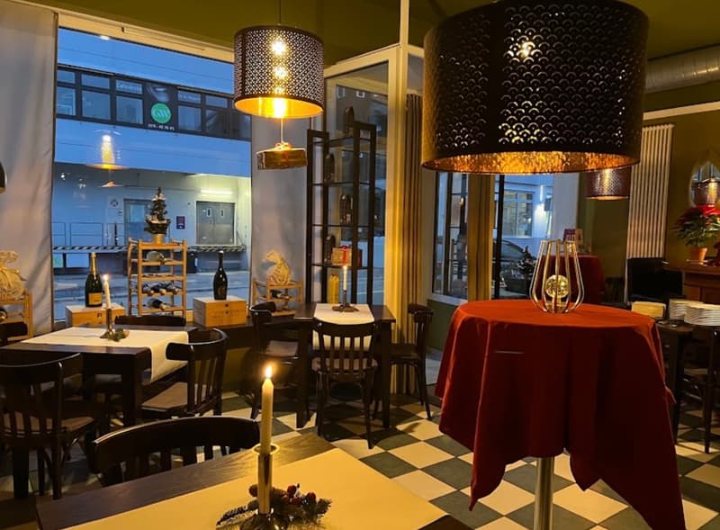
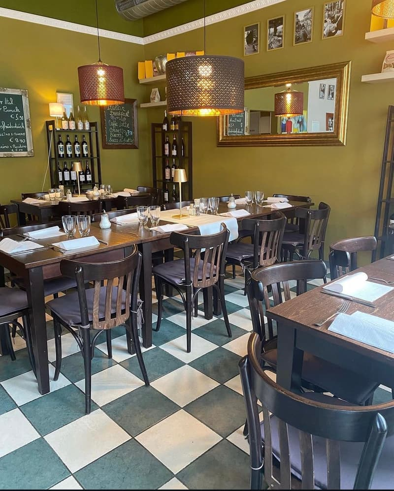
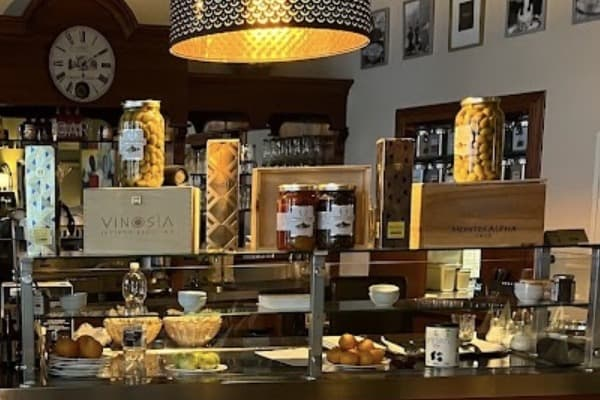

Fratelli heißt Brüder
Eine kleine Osteria in Degerloch, in der man sich schnell wie zu Hause fühlt. Im Hintergrund läuft italienisches Radio, auf den Tischen brennen Kerzen, und der Gastgeber kennt seine Stammgäste beim Namen.

Vom Bistro zur Osteria
Fabio Meli führt das Haus an der Felix-Dahn-Straße seit 2013, damals noch als Bistro für Frühstück und Mittagstisch. 2020 kam sein jüngerer Bruder Flavio dazu, und mit ihm ein neuer Name: Fratelli, vero gusto italiano.
Seitdem kocht die Küche ganz italienisch. Die Pasta machen wir selbst, die Gerichte wechseln mit Saison und Markt, und abends ist das Lokal inzwischen genauso lebendig wie am Morgen, wenn die ersten Gäste ihren Cappuccino trinken.


Feinkost zum Mitnehmen
Was uns schmeckt, gibt es auch für zu Hause. In unseren Regalen stehen italienische Weine, Pasta und Antipasti, dazu Pinsa zum Fertigbacken.
Und das Olivenöl kommt aus der Familie: Unser Vater presst es in Sizilien. Wir verwenden es in der Küche und verkaufen es in Flaschen, solange der Vorrat reicht.
Vorrat erfragen: 0711 768 39 16Worauf Sie sich verlassen können
Frisch und hausgemacht
Pasta aus eigener Herstellung, wechselnde Gerichte und kleine Antipasti zu moderaten Preisen. Frühstück, Mittag- und Abendessen von Montag bis Freitag, samstags bis zum Mittag.
Gartenterrasse
Bei schönem Wetter decken wir draußen im kleinen Garten.
Separater Raum
Für Geburtstag, Familienfeier oder Team-Essen: wir planen mit Ihnen.
Hunde willkommen
Und Kinder sowieso. Bei uns geht es familiär zu.
Zum Mitnehmen
Alle Gerichte auch to go. Telefonisch vorbestellen, abholen, genießen. Wir liefern nicht.
Lernen Sie uns kennen
Am besten bei einem Teller Pasta und einem Glas Wein. Wir freuen uns auf Ihren Besuch.